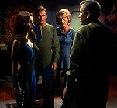
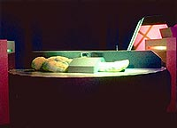
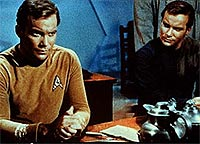
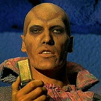
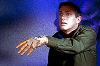

|
MANCHETE
DO episódio
Enredo traz de volta dois Kirks para
debater confronto homem vs. mquina
episódio
anterior | Prximo episódio
Sinopse:
Data Estelar:
2712.4.
A Enterprise chega ao planeta Exo III, para
procurar pelo exobilogo Roger Korby. Quando Kirk pergunta a Spock
se Korby poderia ainda estar vivo, Spock vira seu olhar para
Christine Chapel, para depois silenciosamente desligar seu monitor.
Chapel, a enfermeira-chefe do dr. McCoy, noiva de Korby, que
conhecido nos meios acadmicos como o "Pasteur da medicina
arqueolgica". Ela foi designada para a Enterprise na esperana
de encontr-lo. após algumas tentativas frustradas, Uhura consegue
entrar em contato com o cientista, não subsolo do planeta.
 A
pedido dele, apenas Kirk e Christine Chapel se transportam para o
planeta, onde encontram o pesquisador vivendo em uma caverna subterrnea
construda pelos antigos habitantes do planeta, conhecidos como
"os Antigos". Ele conta a eles que descobriu as cavernas
pouco antes de morrer congelado, cinco anos atrês.
Usando equipamentão deixado pelos antigos habitantes, Korby aprendeu
a construir andrides que se comportam como humanos. Seus
companheiros andrides, Ruk e Andrea, impressionam Kirk e Chapel
por seu realismo. Embora, Korby explica, Ruk existisse muito antes
de ele ter chegado --um produto original dos "Antigos".
Christine reconhece o dr. Brown, assisnte de Korby, mas fica
intrigada com sua incapacidade em reconhec-la de imediato. A razo
para o comportamentão dele fica clara quando Kirk e Chapel descobrem
que ele, também, um sofisticado andride. O plano de Korby
lentamente substituir pessoal-chave na Federao por andrides,
integrando as mquinas a outros mundos.
 Tomando
Kirk como prisioneiro, Korby cria um duplicata perfeita do capito,
que consegue enganar até mesmo a enfermeira Chapel. Durante o
processo de replicao, entretanto, Kirk planta memrias e idias
falsas não crebro de seu duplo, que fazem com que Spock perceba que
há algo de errado com o capito. Korby, convencido de que seu andride
ir enganar a tripulao da Enterprise e permitir que ele tome o
controle da nave, envia a cpia de Kirk a bordo. O Kirk falso
verifica a rota da Enterprise para escolher um planeta adequado no
caminho que sirva para as operaes do cientista.
Spock imediatamente passa a desconfiar do capito, e decide
comandar um gruop de descida para ir ao subsolo após o suposto Kirk
retornar ao planeta. Enquanto isso, em Exo III, Chapel percebe que
Roger Korby mudou de algum modo: ele não mais o homem
maravilhoso pelo qual ela se apaixonou. ele se tornou distante e
insensvel --embora ele ainda tenha grande apreo por sua noiva.
 Separado
de Christine, Kirk vigiado por Ruk. O capito convence o
gigantesco andride de que Korby uma ameaa existncia dele
e precisa ser destrudo. Ruk ataca o cientista e eliminado.
Durante um combate corpo a corpo com Kirk, Christine descobre que
Korby na verdade um andride. Kirk o convence de que ele j
mais mquina do que humano. Na frente de sua noiva horrorizada,
Korby agarra Andrea e dispara um feiser contra si mesmo, matando os
dois. Spock chega com o grupo de descida para encontrar apenas Kirk
e Chapel na sala. A enfermeira diz que gostaria de permanecer na
Enterprise, mesmo após ter completado seu objetivo inicial de
encontrar Korby.
comentários:
"What are Little Girls Made Of?"
se prope pela primeira vez a explorar a dicotomia entre mquinas
e seres humanos. Seguindo a linha humanista adotada pela Série
Clássica, a concluso bvia a de que a essncia do que
faz um ser humano especial perdida quando ele transfere sua
Consciência para uma mquina. Essa interpretao que Jornada
d ao conflito homem versus computador ser repensada da Nova
Gerao em diante, onde formas de vida artificiais recebero
o benefcio da dvida, mas nem se cogita essa possibilidade por
aqui.
além dessa discusso mais bvia, há uma sugestão em um plano
mais sutil --o terror inspirado pela substituio de homens por mquinas.
Se a troca literal e definitiva uma alegoria, o processo de
mecanizao não mercado de trabalho já era uma realidade bastante
palpvel, mesmo nos anos 60. O assunto voltaria a ser discutido, de
forma mais contundente, em "The Ultimate Computer",
do segundo ano da Série.
 O
episódio, que se sustenta basicamente sobre o personagem de Kirk,
utiliza um recurso que j havia dado bons resultados na Série.
Confrontar o capito da Enterprise com uma duplicada de si mesmo.
Em "The Enemy Within", Kirk
enfrentava a si mesmo após uma falha do transporte dividi-lo em
dois, um bom e outro mau. Desta vez, o andride supostamente uma
rplica exata de Kirk, com suas mesmas memrias e estilo, mas com
intenes plantadas em sua mente por Korby.
O roteiro extremamente bem escrito, com cenas antolgicas. Como
o dilogo entre os dois Kirks, a constatao de que Korby se
tornou completamente inumano ao se transferir para um corpo andride
e a sequncia trgica de eventos que começou com Ruk sendo destrudo
por Roger e Andrea destruir a rplica de Kirk.
Os atores convidados ajudam tremendamente na execuo da trama,
com excelentes atuaes de Michael Strong (Korby), Sherry Jackson
(Andrea) e Ted Cassidy (Ruk). Alis, a maquiagem de Ruk uma das
mais impressionantes de todo o seriado original. As sequncias de
luta corpo a corpo entre Kirk e Ruk so das mais interessantes,
devido ao tamanho do andride, que atira o capito da Enterprise
de um lado para outro com facilidade impressionante.
Os outros personagens regulares so praticamente ignorados neste
episódio, que se manifesta como mais um segmentão para Kirk. William
Shatner mais uma vez não decepciona com o papel duplo, embora aqui
ele seja menos exigido do que em "The
Enemy Within".
 A
enfermeira Chapel, apesar de todo o destaque dado a ela neste episódio,
permanece to profunda quanto uma folha de papel. A personagem
acabou não sendo to beneficiada quanto poderia, embora tenha ao
menos ganho algo em termos de background de vida.
Os efeitos visuais deste episódio so impressionantes. A cena em
que os dois Kirks dialogam to perfeita que impossível
verificar que trata-se de uma montagem. Fica apenas um ponto
negativo para o cenrio da cmara de criao de andrides, que
mereceria uma atenção maior do que a que foi dada pela produção.
citações:
Korby - "Do you think I could love a
machine?"
("Voc acha que eu poderia amar uma mquina?")
Chapel - "Did you?"
("Amou?")
Kirk Andride - "Androids don't eat, ms. Chapel."
("Andrides não comem, srta. Chapel.")
Trivia:
 O ator Ted Cassidy (Ruk) já era famoso antes de aparecer em Jornada.
Ele interpretou o mordomo Lurch, não antigo seriado "The Addams
Family". O ator também participou posteriormente de dois
pilotos no-vendidos de Gene Roddenberry, "Genesis II" e
"Planet Earth".
O ator Ted Cassidy (Ruk) já era famoso antes de aparecer em Jornada.
Ele interpretou o mordomo Lurch, não antigo seriado "The Addams
Family". O ator também participou posteriormente de dois
pilotos no-vendidos de Gene Roddenberry, "Genesis II" e
"Planet Earth".
Este episódio
faz a primeira citao ao irmo de James Kirk, George Samuel Kirk.
Aqui ele mencionado como pai de três filhos. Mais tarde, em "Operation:
Annihilate!", o número muda para apenas um.
O autor deste
episódio, Robert Bloch, um conhecido autor cuja verdadeira
fascinao não pela ficção científica, mas pelo terror. Da
a razo de seus roteiros sempre carem para esse tom. além de "What
are Little Girls Made Of?", Block escreveu "Catspaw"
e "Wolf in the Fold".
Ficha
técnica:
Escrito por Robert
Bloch
Direo de James Goldstone
Exibido em 20/10/1966
produção: 10
Elenco:
William Shatner como James Tiberius Kirk
Leonard Nimoy como Spock
DeForestá Kelley como Leonard H. McCoy
James Doohan como Montgomery Scott
Nichelle Nichols como Uhura
George Takei como Hikaru Sulu
Elenco convidado:
Michael Strong como Roger Korby
Sherry Jackson como Andrea
Ted Cassidy como Ruk
Harry Basch como dr. Brown
Vince Deadrick como Matthews
Budd Albright como Rayburn
Majel Barrett como Christine Chapel
episódio
anterior | Prximo episódio
|